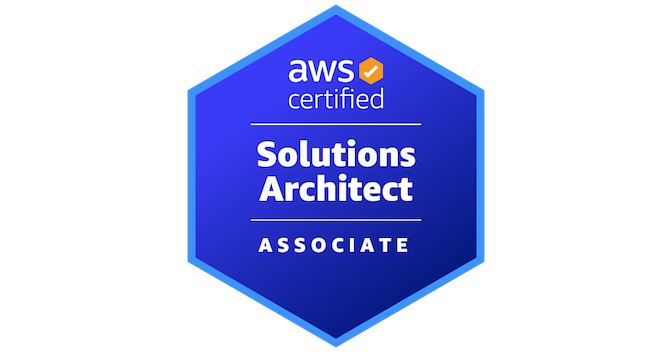
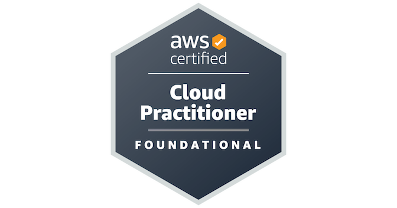
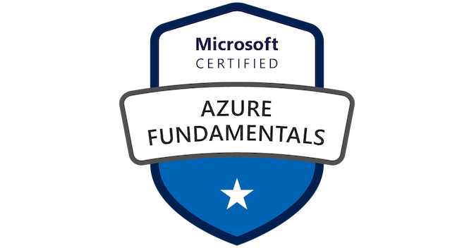

Architecture & Delivery
Guiding initiatives through the full delivery lifecycle, from problem framing and solution design to implementation and operational readiness.
I bring together technical architecture, business consulting, leadership, and end-to-end project delivery to help organisations turn complex needs into reliable outcomes.
Focus Areas
A high-level view of the capabilities I bring to transformation, modernisation, service-channel, and enterprise delivery initiatives.
Guiding initiatives through the full delivery lifecycle, from problem framing and solution design to implementation and operational readiness.
Designing technology capabilities for service channels, contact centres, self-service experiences, and branch-enabled operations.
Supporting better customer experience, regulatory alignment, productivity, simplification, and cost-conscious technology decisions.
Principles
A few working principles that guide how I approach enterprise change, cloud adoption, digital channels, and AI-enabled delivery.
Start with the business result, then shape technology choices around measurable value and delivery reality.
Prefer clear, maintainable architecture over unnecessary complexity, especially in large enterprise environments.
Design for trust, continuity, operability, and pragmatic risk management from the start.
Think about data, governance, human oversight, and agentic AI patterns as part of modern platform design.
Selected Work
An anonymised view of the types of initiatives I help shape, from early problem framing through delivery alignment and operational readiness.
Experience
A resourceful IT professional with a blend of technical, consulting, leadership, and end-to-end project management capabilities.
Senior solutions architecture experience across major financial services initiatives, including customer service, banking, insurance, advice, payments, lending, and operational platforms.
A blend of technical leadership, stakeholder engagement, business analysis, service management, and project delivery across corporate and consulting environments.
Contributing to improved user experience, regulatory alignment, productivity, operational leverage, and sustainable cost outcomes.
Certifications
Current and supporting certifications across cloud architecture, data streaming, observability, Microsoft platforms, and IT service management.

Amazon Web ServicesIssued Mar 2026 · Expires Mar 2029
View verified credential
Amazon Web ServicesIssued Mar 2025 · Expires Mar 2029
View verified credential ConfluentIssued Jul 2021 · Credential ID 34870369
View verified credential
MicrosoftIssued May 2019 · Credential ID 3482862
View verified credentialIssued Dec 2017
Issued Nov 2017
Issued Jun 2013
Issued Sep 2005
Contact
For professional background, current focus, and network updates, connect with me on LinkedIn.